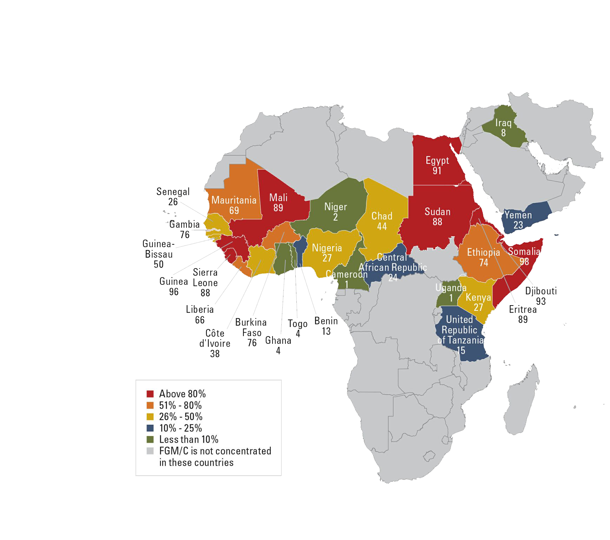

According to the Word Health Organization (WHO):FGM is defined as "all procedures that involve partial or total removal of the external female genitalia, or other injury to the female genital organs for non-medical reasons". It is recognised as a violation of the human rights of women and girls
Severe pain: cutting the nerve ends and sensitive genital tissue causes extreme pain. Proper anaesthesia is rarely used and, when used, is not always effective. The healing period is also painful. Type III FGM is a more extensive procedure of longer duration, hence the intensity and duration of pain may be more severe. The healing period is also prolonged and intensified accordingly.
Excessive bleeding: (haemorrhage) can result if the clitoral artery or other blood vessel is cut during the procedure.
Shock: can be caused by pain, infection and/or haemorrhage.
Genital tissue swelling: due to inflammatory response or local infection.
Infections: may spread after the use of contaminated instruments (e.g. use of same instruments in multiple genital mutilation operations), and during the healing period.
Human immunodeficiency virus (HIV): the direct association between FGM and HIV remains unconfirmed, although the cutting of genital tissues with the same surgical instrument without sterilization could increase the risk for transmission of HIV between girls who undergo female genital mutilation together.
Urination problems: these may include urinary retention and pain passing urine. This may be due to tissue swelling, pain or injury to the urethra.
Impaired wound healing: can lead to pain, infections and abnormal scarring
Death: can be caused by infections, including tetanus and haemorrhage that can lead to shock.
Psychological consequences: the pain, shock and the use of physical force by those performing the procedure are mentioned as reasons why many women describe FGM as a traumatic event.
Painful urination: due to obstruction of the urethra and recurrent urinary tract infections.
Menstrual problems: result from the obstruction of the vaginal opening. This may lead to painful menstruation (dysmenorrhea), irregular menses and difficulty in passing menstrual blood, particularly among women with Type III FGM.
Keloids: there have been reports of excessive scar tissue formation at the site of the cutting.
Human immunodeficiency virus (HIV): given that the transmission of HIV is facilitated through trauma of the vaginal epithelium which allows the direct introduction of the virus, it is reasonable to presume that the risk of HIV transmission may be increased due to increased risk for bleeding during intercourse, as a result of FGM.
Female sexual health: removal of, or damage to highly sensitive genital tissue, especially the clitoris, may affect sexual sensitivity and lead to sexual problems, such as decreased sexual desire and pleasure, pain during sex, difficulty during penetration, decreased lubrication during intercourse, reduced frequency or absence of orgasm (anorgasmia). Scar formation, pain and traumatic memories associated with the procedure can also lead to such problems.
Obstetric complications: FGM is associated with an increased risk of Caesarean section, post-partum haemorrhage, recourse to episiotomy, difficult labour, obstetric tears/lacerations, instrumental delivery, prolonged labour, and extended maternal hospital stay. The risks increase with the severity of FGM.
Obstetric fistula: a direct association between FGM and obstetric fistula has not been established. However, given the causal relationship between prolonged and obstructed labour and fistula, and the fact that FGM is also associated with prolonged and obstructed labour it is reasonable to presume that both conditions could be linked in women living with FGM.
Psychological consequences: some studies have shown an increased likelihood of post-traumatic stress disorder (PTSD), anxiety disorders and depression. The cultural significance of FGM might not protect against psychological complications.
Perinatal risks: obstetric complications can result in a higher incidence of infant resuscitation at delivery and intrapartum stillbirth and neonatal death.
According to UNICEF: FGM occurs in every region of the world. Half of the affected women and girls live in three countries: Egypt, Ethiopia and Indonesia. UNICEF estimates that 60 million women and girls have been cut in Indonesia alone, more than half of them by a trained medical professional. The nations with the highest prevalence are Somalia (98 percent), Guinea (97 percent) and Djibouti (93 percent).The most common countries of origin for women and girls in the United States at risk for FGM/C or its consequences were Egypt (20%), Ethiopia (18%), and Somalia (12%), accounting for 50% of the total percentage.
by Donna Clifton. Licensed under CC BY 2.0
World health organization